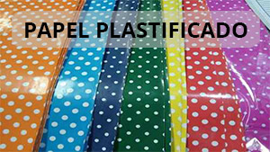
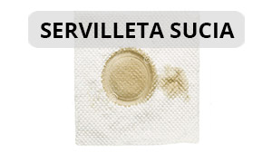

Puntaje
0
Lista de materiales


Para más información te dejamos estos links útiles
Cómo se separan los residuos
Basura vs reciclable
Otros tipos de residuos
Consejos para reducir
Consejos para reutilizar